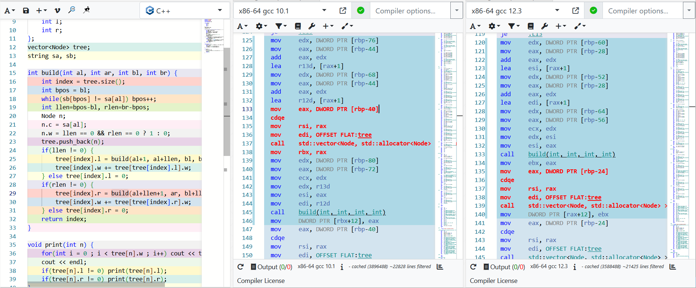
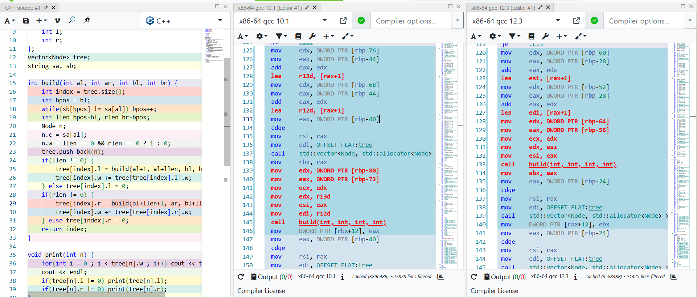

从离奇bug到C++未定义行为
从离奇bug到C++未定义行为
这是发生于2022年12月18日凌晨的事情，起因也许是数据结构课的某道算法题吧，遇到了非常离奇的bug，最后在群友们专家会诊两小时后找到了原因。现在我用聊天记录尽可能还原当时场景。
开端
这是一条很普通的算法题，大概是用先序遍历和中序遍历还原二叉树。下面是我写的代码：
1 |
|
看起来很普通，然而我发现哪怕是输入AB AB，程序都会发生段错误，诡异的是……
可以看到在第 29 行代码处，tree[index].r被build赋的值竟然是非法的，而前面按步执行明明是合法的！
“更玄学的是，如果开个临时变量保存返回值再赋值回去，就没事了”
群友们陆续出动，纷纷在自己的电脑上跑了一下代码，有的段错误，有的却正常运行……
难道，是编译器有bug？
会诊
虽然从聊天记录里看不出来，但其实作为有点内向的我，发问前一定已经做了充分的研究。我已经大概猜到要到汇编层面才能寻找到答案，然而苦于没有合适工具
radare坏了，ida不会用，静态分析看不懂，真的很菜（）
群友Fox用clang挂ASAN没有扫到内存错误，建议继续挂调试器找内存错误原因
群友GZ复现了错误，正在配置调试环境
群友c猜测是逻辑错误
群友jy查看后台，初露端倪：
“草，确实有可能是 gcc 的问题，刚刚看了下：
他 wsl 是 gcc 9
测评是 gcc 10
我 ubt 22.04 是 gcc 11
我 mingw 是 gcc 12”
我发问前应该已经调试了一下午了，都已经爬上床准备睡了，看到群友们干劲十足，自己也不好意思干等着，麻溜地爬下床测试程序复现bug，真的好冷QAQ。
Fox不相信是 gcc 的问题，而GZ沿着这条线索开始深入汇编寻找真相……
如此玄学的bug，我不禁想起前不久B站某次夜间大规模崩溃报告，最终原因竟然是一小段lua代码，在某种情况下以错误的参数调用了 _gcd 函数，导致死循环。
揭示
随着群友们深入汇编，答案即刻浮现。
Fox使用 Compiler Explorer 为我们揭示了答案：
 可以看到，g++10 和 g++12 在 tree[index].r = build(al+llen+1, ar, bl+llen+1, br); 处编译结果并不相同。
汇编也许有点难度，但只看红色部分，我们不难发现有两个操作的顺序是反的！也就是 build(int, int, int, int) 和 std::vector<Node, std::allocator<Node> >::operator[](unsigned long)
前面这个好理解，就是赋值前函数运算，后面这个是……
对喔！tree 是一个 vector ，那么它的下标运算符当然是运算符重载函数，这样一来段错误的原因就很明显了！
在编译器眼里这条语句就相当于 f() = g()，因为 C++ 标准并未规定相同优先级的函数谁先执行，从左到右执行应当是很合理的。
然而在这里，这样就相当于先执行下标引用再执行build。
一般而言，这不会带来什么问题，但在这里，build是一个递归函数，tree完全有可能会在build执行过程中被插入数据，导致容器大小改变。
而vector大小一旦超过预分配的内存，就会触发扩容，如此一来先前调用下标引用得到的地址就会无效！
未定义行为！是未定义行为！
散会
后来我们好像查到，是有人反馈过这个问题，g++在后来就“修复”了这个bug
然而从原理上讲，好像又不能怪罪g++，毕竟确实是未定义行为。
如果要总结什么教训的话，或许就是应该意识到，在享受C++运算符重载便利的同时，也应当注意到它终究是个函数，可能会带来意想不到的情形吧。
好像还有点关于副作用函数的关联，但因为不太了解，就按下不表了。
总之，将容器解引用放在等号左边前请三思。
后记
这篇文章是靠事后回忆写成的，我的印象也很模糊了，但揭示真相时还是很震撼。
前面的铺垫可能太短了，毕竟我文笔不好也没记不清，但我得说，参与讨论的几位群友直到现在我都觉得是很厉害的大佬，他们围绕这个问题在新年前深夜足足讨论了两小时！
希望能给你带来新的思考~